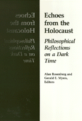

<body bgcolor="#FFFFFF" text="#000000" link="#0000FF" vlink="#CC0000" alink="#CC0000"><center><hr width="350" size="1" align="center" noshade>The first book to focus comprehensively on the profound issues and philosophical significance of the Holocaust<hr width="350" size="1" align="center" noshade><p><a href="https://cdcshoppingcart.uchicago.edu/Cart/ChicagoBook.aspx?ISBN=9780877225393&&PRESS=temple" target="_top">Buy this book!</a> | <a href="https://cdcshoppingcart.uchicago.edu/Cart/Cart.aspx?PRESS=temple" target="_top">View Cart</a> | <a href="https://cdcshoppingcart.uchicago.edu/Cart/Cart.aspx?PRESS=temple" target="_top">Check Out</a></p><p></p></center><!--none//--><h1>Echoes from the Holocaust</h1>
<H2>Philosophical Reflections on a Dark Time</H2>
<h3>edited by Alan Rosenberg and Gerald E. Myers</h3>
<P>cloth 0-87722-539-7 $66.50, Jun 88, <FONT COLOR=#990033>Out of Stock Unavailable</FONT>
<br>paper 0-87722-686-5 $43.95, Feb 90, <FONT COLOR=#990033>Available</FONT>
<br>Electronic Book 1-43990-161-9 $43.95 <FONT COLOR=#990033>Out of Stock Unavailable</FONT>
<BR> 472 pp
</P><h3 align="center"><P><font color="#996633">A Selection of the Jewish Book Club,
1990</font></P>
<P><font color="#996633">Association of American University Presses Book Jacket Award,
1989</font></P>
</H3>
<BLOCKQUOTE><I>"The Nazis tried to exterminate a community famed for rational reflection. Here 23 authors reflect on that event, with an outcome that is chilling but also stirring for those who think that the greatest of human achievements is the ability to stay rational. Everyone who cares about humanity should read some of these essays."</I>
<br>&#151<b><I>Library Journal</I></b><I></I></BLOCKQUOTE>
<p>The murder of six million Jewish men, women, and children during World War II was an act of such barbarity as to constitute one of the central events of our time; yet a list of the major concerns of professional philosophers since 1945 would exclude the Holocaust. This collection of twenty-three essays, most of which were written expressly for this volume, is the first book to focus comprehensively on the profound issues and philosophical significance of the Holocaust.
<p>The essays, written for general as well as professional readers, convey an extraordinary range of factual information and philosophical reflection in seeking to identify the haunting meanings of the Holocaust. Among the questions addressed are: How should philosophy approach the Holocaust? What part did the philosophical climate play in allowing Hitlerism its temporary triumph? What is the philosophical climate today and what are its probable cultural effects? Can philosophy help our culture to become a bulwark against future agents of evil? The multiple dimensions of the Holocaust&#151historical, sociological, psychological, religious, moral, and literary&#151are collected here for concentrated philosophical interpretations.
<BR>&nbsp;<h2>Reviews</h2>
<p><I>"This is a profound and eloquent collection. The essays, both individually and cumulatively, provide impressive, penetrating insights that are of very great help in the continuing and mandatory task of coming to intellectual and emotional grips with the unspeakable tragedy of the Holocaust."</I>
<br>&#151<b>Alan Gewirtb</b>, University of Chicago
<p><I>"A wonderfully informative and also a very moving book, which helps one to understand much better than before the appalling events whose causes it probes. Anyone interested in human beings should read it. For moral philosophers it is a �must.�"</I>
<br>&#151<b>Philippa Foot</b>, UCLA
<p><I>"This is a book to jolt our consciences and stir our minds. This volume provides us with a unique opportunity to share the carefully reasoned insights and thought-provoking reflections of scholars from a wide variety of disciplines, but with professional philosophers for once strongly represented."</I>
<br>&#151<b>Joel Colton</b>, Duke University
<BR>&nbsp;<H2>About the Author(s)</H2>
<P><b>Alan Rosenberg</b> is a Lecturer in the Philosophy Department at Queens College of the City University of New York.</P>
<P><b>Gerald E. Myers</b> is Professor of Philosophy at Queens College and CUNY Graduate Center.</P>
<P>Contributors: Hannah Arendt, Ronald Aronson, Rainer C. Baum, Alice and Roy Eckardt, Martin P. Golding, Peter H. Hare, Manfred Henningsen, Hans Jonas, Steven T. Katz, George M. Kren, Berel Lang, Lawrence L. Langer, Dan Magurshak, Paul Marcus, Abigail L. Rosenthal, John K. Roth, Kenneth Seeskin, Laurence Thomas, Warren K. Thompson, Edith Wyschogrod, and the editors.</P>
<BR><H2>Subject Categories</H2>
<p><A HREF="/tempress/philosophy.html" TARGET="_top">Philosophy and Ethics</a>
<BR><A HREF="/tempress/race.html" TARGET="_top">Race and Ethnicity</a>
<BR><A HREF="/tempress/jewish.html" TARGET="_top">Jewish Studies</a>
</p>
<p align="center"><a href="https://cdcshoppingcart.uchicago.edu/Cart/ChicagoBook.aspx?ISBN=9780877225393&&PRESS=temple" target="_top">Buy this book!</a> | <a href="https://cdcshoppingcart.uchicago.edu/Cart/Cart.aspx?PRESS=temple" target="_top">View Cart</a> | <a href="https://cdcshoppingcart.uchicago.edu/Cart/Cart.aspx?PRESS=temple" target="_top">Check Out</a></p><p><font face="Arial" size="1"><a href="copyright.html" onMouseOver="window.status='Web Copyright Policy';return true;" onMouseOut="window.status=''" title="Web Copyright Policy">&copy;</a> 2015 <a href="http://www.temple.edu" target="new" onMouseOver="window.status='Link to Temple University home page';return true;" onMouseOut="window.status=''" title="Link to Temple University home page">Temple University</a>. All Rights Reserved. http://www.temple.edu/tempress/titles/433_reg.html</font></p>